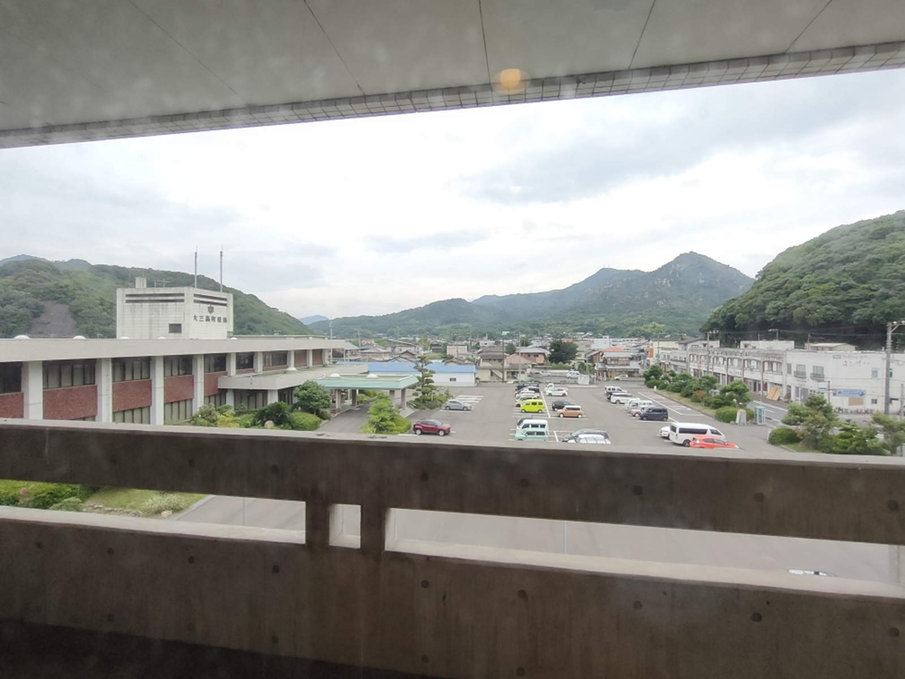
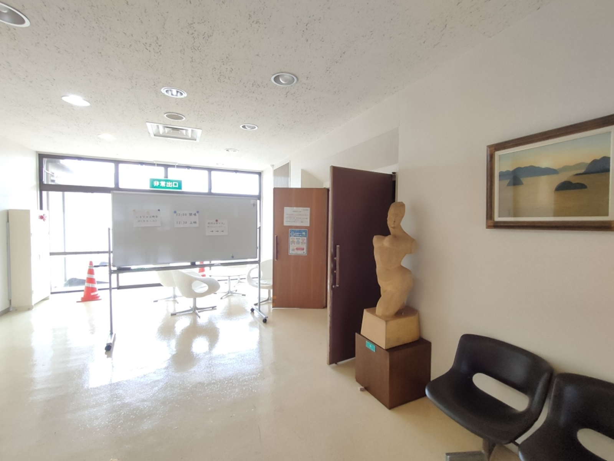

0009 しまなみ映画祭へ

こんにちは。hanaponです。
気になっていた、しまなみ映画祭へ行ってきました。
因島、生口島、大三島の３島開催で、今年2025年は日にちが重ならない日程で行われたとのことです。
私の観たい映画が大三島だったことから、サイクリングしつつ、現地入りへ。
大三島公民館から役場をみる↓

上映会会場（大三島公民館三階）↓ 20～30人くらいが参加されました

＜映画作品＞「モアナヌイアケア」（2018年公開）
ハワイで普通の人たちを募集して、古代ポリネシアの伝統航海カヌーで、エンジンや現代技術なしで 太陽や月・星などの位置を見ながら、７万キロメートルにもおよぶ航海を行うという映画でした。
ホクレア号に乗船した者たちが協力し合い、さらに気候変動により島に影響が出ている地や原住民が 住む土地へ寄港して、原住民の皆さんが歓迎の歌と踊りをしたり、交流を深めるというものでとても素 晴らしかったです。
今後、1.7m？海水位が増すということも言われており、日本も、そしてしまなみ海道沿いの島々も いずれ影響が出てくることを考えると、大変共感できるものがありました。
地球はひとつ、海が大陸や島をつないでいる。当たり前のことを再認識。
影響を受ける島の住人たちの言動が今後増していくものと思われますし、生活の場がなくなってし まわないように声を挙げていくことも求められます。
映画を観た後は、電動アシスト自転車の充電も必要なので大三島のゲストハウスに宿泊してきました。